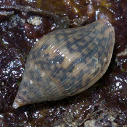
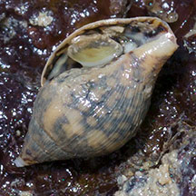
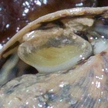
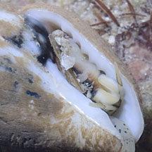
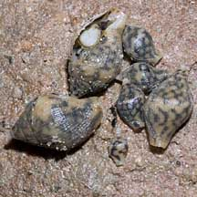

|
|
| shelled snails text index | photo index |
| Phylum Mollusca > Class Gastropoda > Family Columbellidae |
| Turtle
dove snail Pardalinops testudinaria* Family Columbellidae updated Jul 2020 Where seen? This little snail with a net-like pattern on the shell is sometimes seen in small groups under stones on some of our Southern shores. It was previously known as Pyrene pardalina and Pyrene testudinaria and Pardalina testudinaria. Features: 1.5-2cm. Shell thick, pale (white or beige) with a net-like pattern of dark thick lines. Testudo means tortoise or turtle, perhaps referring to this shell pattern. Operculum is narrow and made of a horn-like material. Some seen have shells that are very thin at the shell opening: possibly a young snail? |
 Young snail with thinner shell. St John's Island, Mar 05 |
 Underside. |
 Operculum |
 Sentosa, Nov 11 |
 Adult snail with thicker shell. |
 Juveniles of various sizes. St John's Island, Feb 11 |
| Turtle dove snails on Singapore shores |
On wildsingapore
flickr
|
| Other sightings on Singapore shores |
Links
References
|